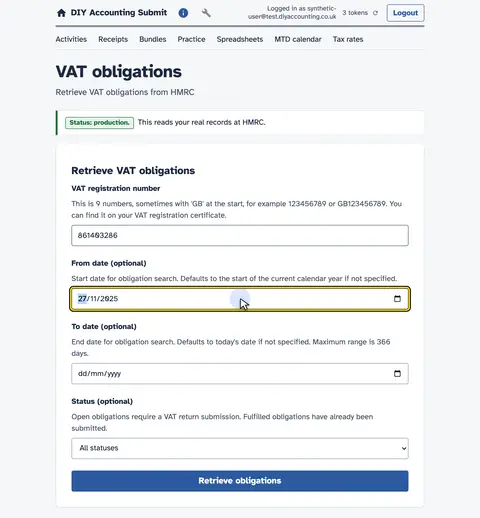
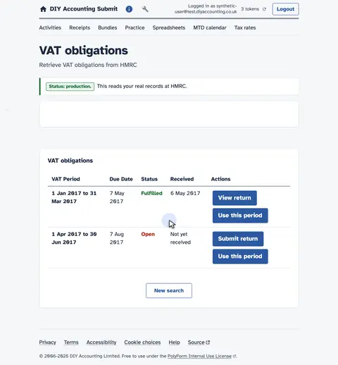
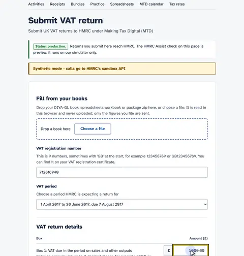
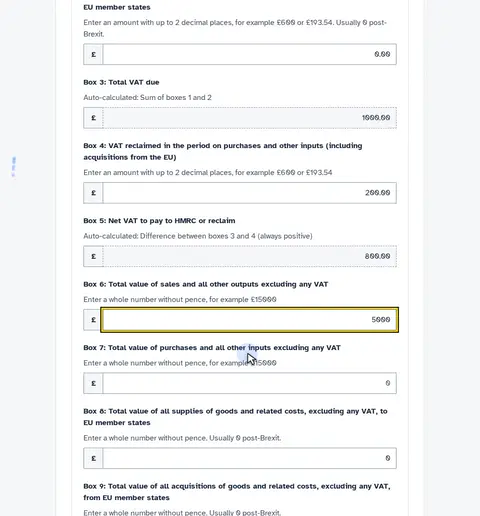
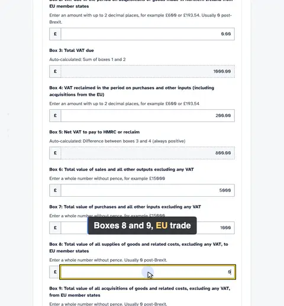
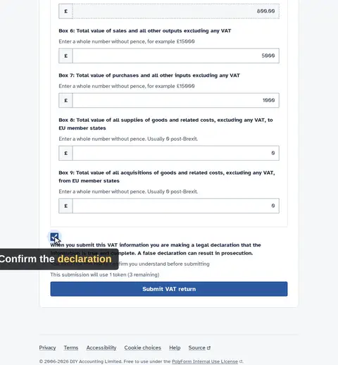
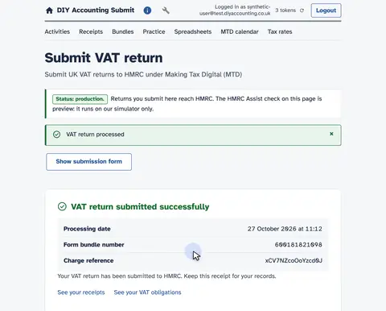
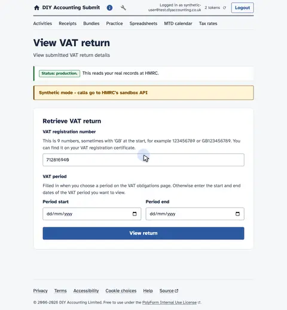
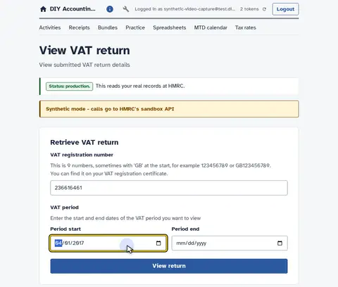

Submit sends the nine boxes of your VAT return to HMRC. You keep your records in your own spreadsheet, work out the boxes there, and enter the figures here. HMRC sends back a receipt with a Form Bundle Number.
- Price: £9.99 a year or £0.99 a month for the Resident VAT bundle.
- Due: Every VAT-registered business sends its returns to HMRC through Making Tax Digital software.
- What you need before you start
What you need before you start
- Your VAT registration number.
- The figures for the nine boxes of the period, worked out in your spreadsheet.
- A Government Gateway user ID and password, to give Submit permission to send your returns to HMRC.
- A Google or Microsoft account to sign in to Submit.
The steps
These pictures come from HMRC's test service, which uses periods from 2017. Your screen shows your own periods.
-
Ask HMRC

Enter your VAT registration number and the dates to search between, then choose Retrieve obligations.
-
The periods on file

Read the periods HMRC holds for you: a Fulfilled period already has its return, and an Open period is waiting for one.
-
Start the return

Choose Submit return beside the open period.
-
Box 1, VAT on sales

Enter box 1, the VAT due in the period on sales and other outputs.
-
Box 2, usually zero

Enter box 2, the VAT due on acquisitions of goods made in Northern Ireland from EU member states. Enter 0 if you have none.
-
Box 3 adds it up

Check box 3, the total VAT due. Submit adds boxes 1 and 2 for you.
-
Box 4, VAT reclaimed

Enter box 4, the VAT you reclaim in the period on purchases and other inputs.
-
Box 5, the net total

Check box 5, the net VAT to pay to HMRC or reclaim. Submit works it out from boxes 3 and 4.
-
Box 6, total sales

Enter box 6, the total value of your sales and other outputs, excluding VAT.
-
Box 7, total purchases

Enter box 7, the total value of your purchases and other inputs, excluding VAT.
-
Boxes 8 and 9, EU trade

Enter boxes 8 and 9, the value of goods supplied to and acquired from EU member states, excluding VAT. Enter 0 if you have none.
-
Confirm the declaration

Tick the declaration that the information is true and complete.
-
Authorise again

Choose Submit VAT return, then sign in to HMRC and give permission again, because sending a return needs a wider grant than reading obligations.
-
Submitted

Read the receipt that HMRC returns, with its Form Bundle Number, and keep it as your record.
-
Read back what you filed

Choose Activities to go back to the list of what you can do.
-
Open View VAT Return

Choose View VAT Return (HMRC).
-
Choose the period

Enter the start and end dates of the period you filed.
-
Ask HMRC for the record

Choose View return to ask HMRC for the return on file.
-
HMRC sends the record

Wait for HMRC to send back the return it holds.
-
Your record, as submitted

Check the totals and the declaration in your copy against what you submitted.
Watch the video: How to submit a VAT return under MTD.
Price
The Resident VAT bundle covers this filing and costs £9.99 a year or £0.99 a month.
The day pass is free and gives you 3 submissions to try it first.
When it is due
Every VAT-registered business sends its returns to HMRC through Making Tax Digital software.
Businesses need to have signed up to Making Tax Digital for their first VAT return starting on or after 1 April 2022.
See every date on the MTD calendar.
Other filings
- How to file micro-entity accounts at Companies House
- How to file small company accounts at Companies House
- How to file dormant company accounts at Companies House
- How to file a confirmation statement (CS01)
- MTD VAT bridging software compared by price
Each filing and the ways to file it are in the availability table.
More free tools are on the Tools page.